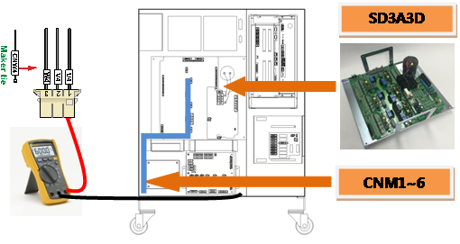
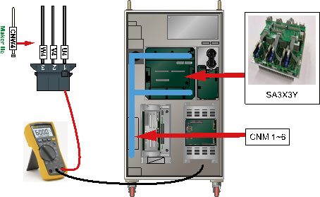

1.1.11.1. Outline
A fault output has occurred from an IPM (Intelligent Power Module) – a switch device inside of Servo Drive Unit that drives the motor. IPM fault may occur due to an increased temperature of heat sink, IPM¡¯s control voltage reduction or an over-current output.
1.1.11.2. Causes and examine methods
|
<Error occurs non periodically when the motor turns on> (1) Please examine the motor drive components. n Please examine the output cable that connects to the Servo Drive Unit. n Please examine the terminal (socket) of switching device in the Servo Drive Unit. n Please replace CNBS1, 2, 3 cables and confirm the error. n Please replace the Servo Board (BD544) and confirm the error. n Please replace the Servo Drive Unit and confirm the error. n Please replace the Servo motor and confirm the error.
<Error occurs at a certain step> (2) Please examine the Robot at the step that an error occurs. n Please examine the Robot¡¯s wiring at the location where the error occurs. n Please reduce the speed of robot¡¯s operation in order to confirm the error. n Please make changes on teached step¡¯s interpolation and confirm the error.
<Case: Error occurs after 5 minutes from the startup of Robot¡¯s operation> (3) Check the controller¡¯s cooling fan n Please examine the operational status of each fan n Please examine the power voltage of each fan |
(1) Please examine the components that are related to the motor drive.
Servo Drive Unit that drives the motor receives a command from the Servo Board (BD544) through CNBS cable, and the current output of internal amplification circuit will be transferred to the motor through wirings that connected to each connectors of axis.
n Examine the output cable that connects to the Servo Drive Unit
Examine the wirings that connect the Servo Drive Unit to the motor. Please turn off the power of controller, and remove the connector from the Servo Drive Unit and measure the resistance value between grounds to inspect the occurrence of short circuit.
(a) Hi5a-S00 controller

(b) Hi5a-S30 controller

(c) Hi5a-N00 controller

(d) Hi5a-N30 controller
Figure 1.51 Checking the servo drive unit output cable
n Examine the switch device of Servo Drive Unit
Switch device of Servo Drive Unit switches the direct current voltage that supplied from diode module and output the alternating current for each phases. If a short circuit occurs at the internal terminal of switch device, over-current flow and it will cause an IPM fault error. Please remove the connector and check if a short circuit has occurred between the output terminal in a switch device of Servo Drive Unit and the P (or N).
If a short circuit exists, the Servo Drive Unit need to be replaced and also the cable that connects the Servo Drive Unit to the motor needs to be examined.
¨ª Hi5a-S controller
l Medium size Robot¡¯s Servo Drive Unit: SD3X3Y
l Small size Robot¡¯s Servo Drive Unit: SD3A3D
¨ª Hi5a-N controller
l Medium size Robot¡¯s diode module : SD1L2C
l Small size Robot¡¯s Servo Drive Unit: SA3A3D
(a) Hi5a-S00 controller (SD3X3Y)
(b) Hi5a-S30 controller (SD3A3D)

(c) Hi5a-N00 controller (SA3X3Y)
(d) Hi5a-N30 controller (SA3A3D)
Figure 1.52 Checking the switching device short-circuiting
n Replacement of CNBS cable and examining the error CNBS
Servo Drive Unit that drives the motor receives a command from the Servo Board (BD544) through CNBS cable, and the current output of internal amplification circuit will be transferred to the motor through wirings that connected to each connectors of axis.
If the error does not persist after the replacement of cable, cable is faulty. Please replace the CNBS cable with new one.
(a) Hi5a-S00 controller
(b) Hi5a-S30 controller
BD544
(c) Hi5a-N00 controller
BD544
(d) Hi5a-N30 controller
Figure 1.53 Arranging the parts related to the motor driving
n Replacement of Servo Board (BD544) and examine it
If the error does not persist after the replacement of Servo Board (BD544), Servo Board (BD544) is faulty. Please replace the Servo Board (BD544) with new one.
n Replacement of Servo Drive Unit and examine it
If the error does not persist after the replacement of Servo Drive Unit, Servo Drive Unit is faulty. Please replace the Servo Drive Unit with new one.
¨ª Hi5a-S controller
l Medium size Robot¡¯s Servo Drive Unit: SD3X3Y
l Small size Robot¡¯s Servo Drive Unit: SD3A3D
¨ª Hi5a-N controller
l Medium size Robot¡¯s diode module : SD1L2C
l Small size Robot¡¯s Servo Drive Unit: SA3A3D
n Replacement of Servo Motor and examine it
If the error does not persist after the replacement of Servo Motor, Servo Motor is faulty. Please replace the Servo Motor with new one. Below diagram describes the locations of each axis¡¯s motor (HS165 Robot). For other Robot, please refer to the Robot¡¯s maintenance manual to replace it.
Figure 1.54 Locations of each axis¡¯s motor (HS165 Robot)
(2) Please examine the Robot at the step that an error occurs
If IPM fault error occurs at a certain step, it may occur when the device wiring has been damaged at teached step or the axis speed changed greatly when the teached program changes the position.
n Examine the internal wiring at the location of an error
Examine the wiring status of corresponding axis that connected to the motor (inside of Robot). During the examination, please turn off the controller¡¯s power and remove the output connector from the Servo Drive Unit. After that please measure the resistance value between grounds of each phases (cable side) to test a short circuit.

Figure 1.55 Location of wiring examination for each axis (HS165)
n Reduce the speed of Robot¡¯s operation in order to confirm the error
If an error occurs at a step that generates rapid changes of axis speed which is caused by the position changes of Robot, reduce the operation speed to confirm the error. If the error does not persist after the speed is reduced, please change the Teach speed of corresponding step and record the job program to use.
n Change the teached step¡¯s interpolation to confirm the error
If the axis speed rapidly changes even after the operation speed is reduced by 75%, please change the teached step¡¯s interpolation to ¡®P¡¯ and confirm the error. If the changes on interpolation resolve the error, (at the same operation speed) please modify the Teach.
(3) Check the controller¡¯s cooling fan.
If the IPM fault error occurs after over 5 minutes since the start of the robot, it means that the controller¡¯s cooling system has caused abnormalities, surpassing the allowable temperature specifications of the IPM motion. The rear face of the controller is equipped with the heat sinking plane of the servo driving gear and the fan for cooling the regenerative discharge resistance.
Table 1-5 Position for installing the controller pan(Hi5a-S)

Table 1-6 Position for installing the controller pan(Hi5a-N)
n Checks for the motion of each fan
When the fan does not rotate or the speed is abnormally low, change the involved fan, please. The fan¡¯s life span changes depending on motion, environments and time.
n Checks for the voltage of fan power supply
If all fans do not work, check the fan for the input voltage, please. The input voltage has been set as AC 220V, and the allowable range is within 10 % of rated voltage. When the voltage is low more than 10 %, the fan¡¯s reduced RPM causes the decline in cooling effectiveness. When the voltage is low, check the connector used for the fan and the input voltage of the controller.